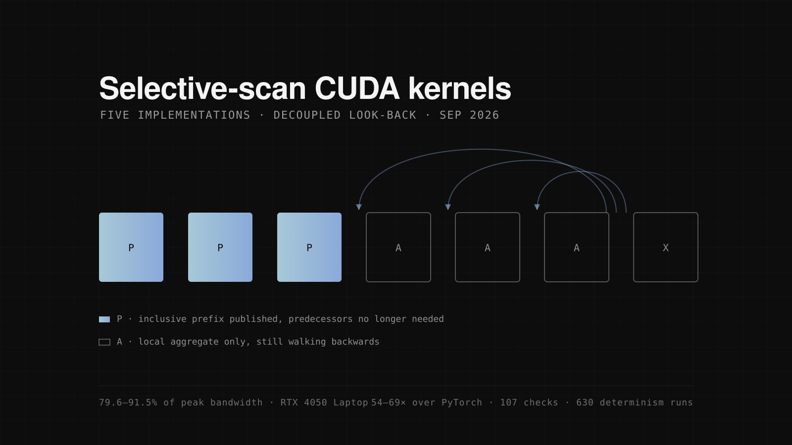

Selective-scan CUDA kernels
In HybridMamba-11 I rewrote the selective state-space recurrence as a parallel scan in pure PyTorch, because Mamba's reference kernels would not compile. That worked, but it left an obvious question unanswered: how fast can this recurrence actually go if you write the kernel yourself?
The recurrence is h[t] = a[t]·h[t-1] + b[t], which looks strictly sequential and is not. Each step is an affine map, affine maps compose, and composition is associative, so the whole thing is a prefix scan over pairs. Associativity is the entire licence for running it in parallel. Commutativity does not hold, which means every swapped operand is a silently wrong answer rather than a crash.
I built it five times. A Blelloch up-sweep and down-sweep in shared memory. A three-pass multi-block version. Then three variants of decoupled look-back, the single-pass algorithm from Merrill and Garland's NVIDIA tech report, which is what CUB's DeviceScan runs underneath: a serial predecessor walk, then a warp-parallel walk inspecting 32 predecessors at once, then multiple items per thread scanned in registers.
The fastest kernel sustains 79.6–91.5% of the theoretical memory bandwidth of an RTX 4050 Laptop, and is 54–69× faster than the best pure-PyTorch baseline. Before writing it I had a memory-traffic model predicting a 2.33× gain over the three-pass version. Measured, 2.18–2.48×. The model was right for the reason it claimed to be.
A look-back scan is a hand-rolled synchronisation protocol between thread blocks, built on atomics, memory fences and volatile flag loads. Get one fence wrong and the kernel is correct almost every time, which is worse than being wrong every time. So the kernels carry 107 correctness checks against a float64 reference and 630 determinism runs, and the CPU mirrors of the index arithmetic each contain a deliberately broken variant: the suite has to prove it catches an operand-order error before any CUDA gets written.
Five predictions went in writing before any measurement. Three held. Two did not. I was convinced per-call allocations were the remaining cost, and a pre-allocated workspace measured identically, inside the noise: PyTorch's caching allocator had already made it free. The second was the expectation I had registered for Hillis–Steele, and the PyTorch version does not hold up against the single-pass kernel. That comparison is not a fair one yet, so I don't read it as a verdict on the algorithm: it runs in PyTorch rather than as a register-resident CUDA kernel, which means part of what it measures is the framework. Both refutations are in the writeup rather than buried, and the useless parameter is still in the source, labelled as useless.
Limits: one GPU, one clean sweep, fp32, forward pass only, no vectorised loads yet. On a laptop the memory clock oscillates and roughly every second sweep is unusable, so these numbers come from a run where the clock stayed pinned and a known-stable kernel returned its known value. They have not been reproduced on a second architecture.
- Stack
- CUDA C++, PyTorch C++ extensions, shared memory, warp intrinsics, atomics
- Result
- 79.6–91.5% of peak bandwidth · 54–69× over PyTorch
- Year
- 2026
- Code
- selective-scan-cuda

Next: HybridMamba-11